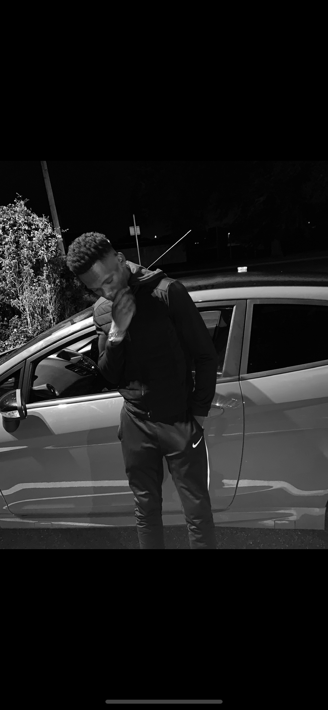
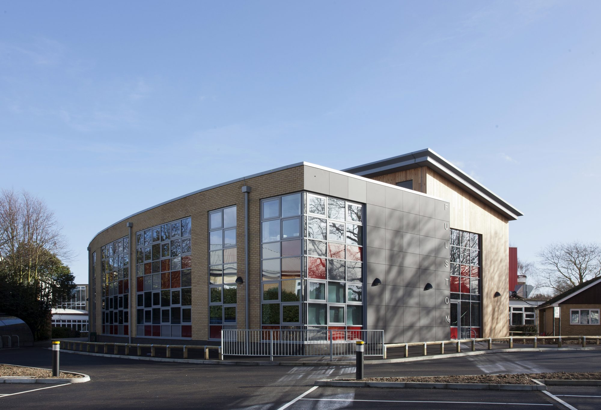
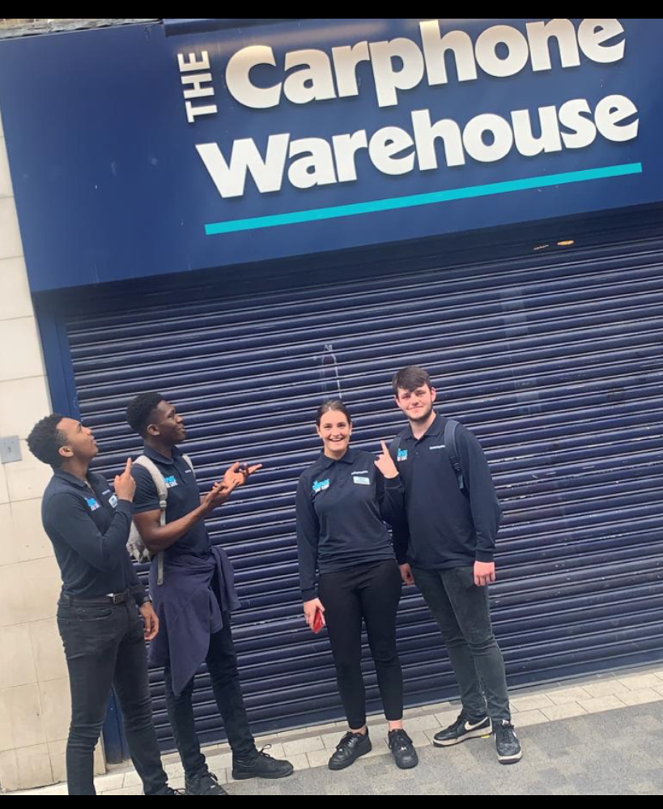

about
Personal History
Hi, I'm Aji, I am a business computing student at the University of Northampton. I'm a Nigerian, born in Ireland in a town called Portlaoise, however I grew up in England.
Education History
Between September 2012-2016 i was studying at Fulston Manor School in which time i managed to gain 5 GCSEs, which allowed me to continue on for the next two years studying my A levels and obtaining the grades required to now study at a University level.
Work History
In October 2018 I applied for a Job at Carphone Warehouse, which required me to go on a three day training course in birmingham in which out of a group of over 100 people, I was handpicked to join the organisation. I even finished top of my class.